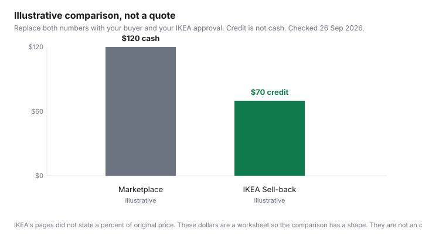

Household Items and Supplies · Canada
IKEA Canada Sell-Back and As-Is: How to Get Store Credit for Old Furniture and Buy Discounted Pieces
IKEA Canada will take some used IKEA furniture back and pay you in store credit, if you are an IKEA Family member, the piece is on the accepted list, and you finish the steps before the drop-off window closes. It will not hand you cash. A number you may have heard, credit up to about half the original price, was not on the Canadian pages opened for this guide. It is dropped. The quote on your application is the number that matters, and the store can still refuse the piece when you arrive.
This is education about a retailer program, not advice to sell, and not a prediction of what Facebook Marketplace would pay for your KALLAX. The total cost of a new flat-pack, including delivery, is the furniture guide. Used-sale safety is the used-goods guide.
Key takeaways
- Sell-back requires IKEA Family. The buy-back page says check the estimate 3 to 5 days after you submit, then bring the assembled piece within 30 days. The terms say allow 5 business days and require four photos, including the IKEA label.
- Credit is an in-store refund card. It is not cash, and it cannot be used on IKEA Food. The terms say no other form of payment.
- Accepted categories include dressers, non-kitchen cabinets, non-upholstered chairs, tables, and desks. Mattresses, sofas, kitchens, PAX, bed frames, glass, and modified pieces are out. So is anything more than 10 years past its end sale date, or missing the IKEA sticker.
- All Canadian IKEA stores participate. Design studios and pick-up points do not. U.S. IKEA purchases may not be eligible, on the terms.
- A double-credit offer and 15 percent off As-Is ran 1 to 31 October 2025, on IKEA Canada’s newsroom release of that date. The standing buy-back page, opened 26 Sep 2026, does not advertise a current boost. It says the program is year-round, not only at Green Friday.
How IKEA Canada's Sell-back program works: IKEA Family, online quote, 3–5 day assessment, 30-day drop-off
The buy-back page opened 26 September 2026 gives five steps. You calculate a value by submitting an application. You must be an IKEA Family member. You check the status by signing back into the application. The page says that 3 to 5 days after you submit, you sign in to see the status. If it is approved, you bring the assembled furniture to your local IKEA store within 30 days of receiving the estimate. At the exchange and returns area the condition is examined and a final price is given, which can differ from the estimate. You then get an IKEA refund card.
The terms and conditions page is stricter on the paperwork. You submit four photos: three angles and one that shows the IKEA label or stamp. The recovery team assesses the submission. If it is eligible, the quote is based on condition and original retail value. Allow 5 business days, then check again. If it is still processing, wait one more day. Only approved customers are contacted. You accept by returning the item to the store where the submission was accepted, with the IKEA Family card and the reference code, for a physical inspection. Co-workers cannot change the quoted price. They can refuse the product if it fails the criteria on the day, even if it was approved online. The two clocks, 3 to 5 days on the marketing page and 5 business days in the terms, are both on IKEA pages. Use the terms when you are counting, and do not book a truck for day three.
An older launch note said a minimum of three photos. The terms opened on 26 September 2026 say four. Follow the form you are filling in today. All IKEA stores in Canada participate. Design studios and pick-up locations do not. The terms add that IKEA accepts products purchased from IKEA Canada, and that a product purchased at a U.S. store may not be eligible. Bring identification if asked. The program can be changed or ended without notice, on those terms.
What's accepted (bookcases, dressers, tables, desks) and what's not (upholstery, mattresses, kitchens)
The buy-back page’s accepted list, opened 26 September 2026, is chest of drawers and nightstands, cabinets that are not kitchen, chairs and stools excluding fabric upholstery, dining tables, office desks and chairs excluding fabric upholstery, multimedia furniture such as TV benches, small tables, and home décor and storage excluding lighting and cookware. The terms use a similar list and name bookcases and shelf units explicitly. A piece has to be structurally sound, resalable, free of odours and dander, fully assembled, complete, unmodified, and still carrying its care labels and stickers. “Hacked” pieces, including repainting, are out.
The refused list on the same page is the one that surprises people who own a sofa. Non-IKEA products, anything used outside including outdoor furniture, market-hall items including cookware and lighting, mattresses and bed textiles, bed frames, fabric-upholstered sofas and armchairs, soft furnishings, items that contain glass, kitchens including benchtops and fronts, PAX wardrobes and accessories, other oversized items, appliances and other electrical items, children’s products such as cribs and changing tables, products more than 10 years past their end sale date, and products missing the original IKEA sticker. If the sticker is gone, the terms do not give you a workaround. The page points unaccepted items in the Greater Toronto Area toward Furniture Bank, and it says Furniture Bank is not an IKEA service. A mattress IKEA will not buy back is also a poor Marketplace sale. The used-goods guide explains why.
How much credit to expect and why it's store credit only
Expect the number in the approval email, not a percent from a headline. The terms tie the quoted price to condition and original retail value. They do not print tiers such as “excellent is 50 percent.” Because they do not, this guide does not either. The buy-back page warns that the final price at the desk can differ from the estimate. Plan the trip so a refusal does not strand you. You may have to take the piece home. Measure the vehicle before you dismantle nothing: the piece must arrive assembled, which is the opposite of how it left the store.
The refund card is spendable online or in store at any time, except IKEA Food: bistros, restaurants, and the Swedish Food Market are excluded on the buy-back page. The terms say payment is in-store credit for participating stores only, and that no other form of payment will be provided. You cannot ask for cash, a cheque, or a credit-card refund of the original purchase. That is why a piece you will not replace with something from IKEA can be worth more as a local cash sale, if a buyer exists. Selling before a move, and what that does to the truck, is the declutter guide.
Shopping the As-Is section for returns and ex-display pieces
The buy-back FAQ says you can buy second-hand IKEA furniture in the As-Is area of a store near you, and that you can reserve from As-Is. It does not, on the page opened 26 September 2026, print a standing discount percent for As-Is. The only percent this draft opened was in a newsroom release: 15 percent off As-Is through October 2025, paired with double sell-back credit. That month is over. Do not walk in expecting 15 percent off unless a current page says so. Inspect an As-Is piece the way you would any used furniture: stability, missing hardware, odours, and whether the sticker and parts are there. A return you later want to sell back has to meet the sell-back rules, which are not the same as IKEA’s new-product return window. A cast-iron pan page opened the same day showed a 365-day return line. That was a new pan, not an As-Is bookcase. Do not copy it across.
Sell-back vs Facebook Marketplace: which gets you more for the same piece
Marketplace can pay cash to anyone, for IKEA and non-IKEA, and it can pay nothing if nobody wants the piece. Sell-back pays store credit, only for eligible IKEA pieces, only after an approval, and only if the inspection matches the photos. The certain part of sell-back is the process. The uncertain part is the quote. The certain part of Marketplace is that cash spends anywhere. The uncertain part is the buyer, the no-show, and the payment scam described in the used-goods guide. For a small city apartment, the question is also whether you need the piece gone more than you need the highest dollar. That constraint is the small-apartment guide, not a reason to force a sofa into a program that excludes sofas.

How to use the chart without lying to yourself. Replace both numbers with your own. The Marketplace bar is a buyer who has paid you, after you subtract nothing for a truck you did not hire. The IKEA bar is the approved credit, which you can spend only at IKEA, so a dollar of credit is not a dollar of rent. If you will not shop at IKEA, discount the credit in your head or do not go. If Marketplace has been listed for two weeks with no serious buyer, the credit can win even when it is smaller.
Timing: circular-economy promotions with boosted credit
The standing program is not a promotion. The buy-back FAQ says it is available all year, and it answers “no” to the question of whether it exists only during Green Friday. A boosted window is a separate, dated offer. IKEA Canada’s newsroom article on circular economy month, whose text matches a CNW release dated 1 October 2025, said that from 1 to 31 October eligible products would earn double the usual sell-back value, and that As-Is would be 15 percent off for that month. The same release said the program had seen over 13,000 successful submissions the previous year. Those figures describe 2025. They are not a 2026 offer. The buy-back page opened 26 September 2026 did not advertise a double-credit period. If a later page does, the dates on that page are the dates. Do not assume October repeats.
| Rule | What the page says |
|---|---|
| Who can apply | IKEA Family members. Online application. Four photos in the terms, including the label. |
| Assessment | Buy-back page: check status 3 to 5 days after submit. Terms: allow 5 business days. |
| Drop-off | Within 30 days of the estimate, assembled, at the store that approved it. Not a design studio or pick-up point. |
| Eligible | Bookcases and shelves, dressers and nightstands, non-kitchen cabinets, non-upholstered chairs and stools, dining tables, desks, small tables, multimedia furniture, some décor and storage. |
| Excluded | Upholstery, mattresses, bed frames, kitchens, PAX, glass, outdoor, appliances, hacked pieces, missing sticker, more than 10 years past end sale date. |
| Credit | Store credit only, on a refund card. Not cash. Not valid on IKEA Food. Final desk price can differ. No published percent. |
| Condition | Resalable, complete, clean, unmodified, fully assembled, structurally sound. Quote uses condition and original retail value. Tiers were not printed. |
| Boosted credit | 1 to 31 Oct 2025: double sell-back value and 15 percent off As-Is, on the 1 Oct 2025 release. Not on the standing page opened 26 Sep 2026. |
Sources & date stamps
- IKEA Canada, Sell-back program, ikea.com/ca/en/circular/buy-back/, opened 26 Sep 2026. Family membership, 3 to 5 days, 30-day drop-off, refund card, accepted and refused lists, As-Is pointer, year-round and not only Green Friday, Furniture Bank note.
- IKEA Canada Sell-back terms, opened 26 Sep 2026. Four photos, 5 business days, quote from condition and original retail value, in-store inspection can refuse, store credit only, U.S. purchases may be ineligible, 10-years-past-end-sale exclusion.
- IKEA Canada newsroom, circular economy month, text opened 26 Sep 2026, dated 1 Oct 2025 on the release. Double sell-back value and 15 percent off As-Is from 1 to 31 Oct 2025. Over 13,000 successful submissions the prior year. Not a current offer.
Frequently asked questions
How does IKEA Sell-back work in Canada?
You need an IKEA Family membership, an online application with photos, and an assembled piece brought to the store that accepted the offer. The buy-back page says the estimate is checked 3 to 5 days after you submit and that you have 30 days from the estimate to bring it in, while the terms say to allow 5 business days. The in-store inspection can change the offer or refuse the piece.
What furniture does IKEA buy back?
The buy-back page accepts dressers, nightstands, non-kitchen cabinets, non-upholstered chairs and stools, dining tables, desks, small tables, and some storage. The terms also name bookcases and shelf units. It refuses upholstery, mattresses, kitchens, PAX, bed frames, glass, outdoor furniture, appliances, and anything hacked or missing the IKEA sticker. Products more than 10 years past their end sale date are refused too.
How much credit will I get?
The terms say the quote is based on condition and the product’s original retail value. They do not publish a percent of that value. The buy-back page says the final price at the returns desk can differ from the estimate, and staff cannot change a quoted price but can refuse the item. A research lead of about 50 percent was not on the pages opened 26 September 2026, so it is not used here.
Is the credit cash or store credit?
Store credit, on an IKEA refund card you can spend online or in store, and the buy-back page says it cannot be used in the bistro, restaurant, or Swedish Food Market. The terms say no other form of payment will be provided, and the credit is for participating stores. A Marketplace sale is cash from a buyer, and sell-back is not.
Is Sell-back better than selling on Marketplace?
It is better when you want a certain pickup of a piece Marketplace has not sold, and you will spend the credit at IKEA. It is worse when you need cash, or when the quote is low and a local buyer is real. IKEA did not publish a percent, so this guide does not declare a winner in dollars. The chart uses illustrative inputs and says so.